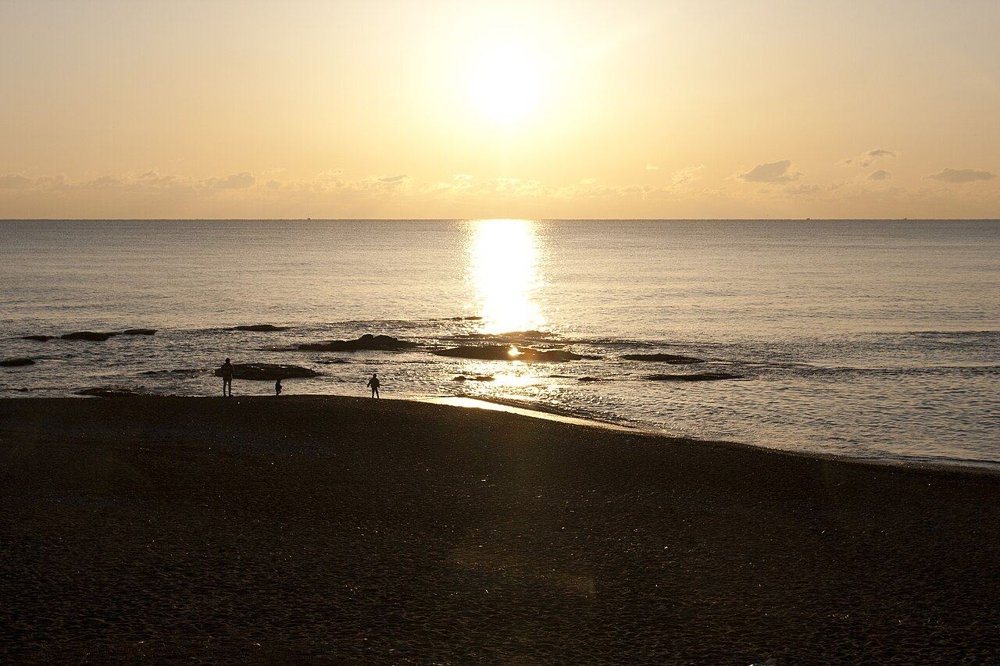
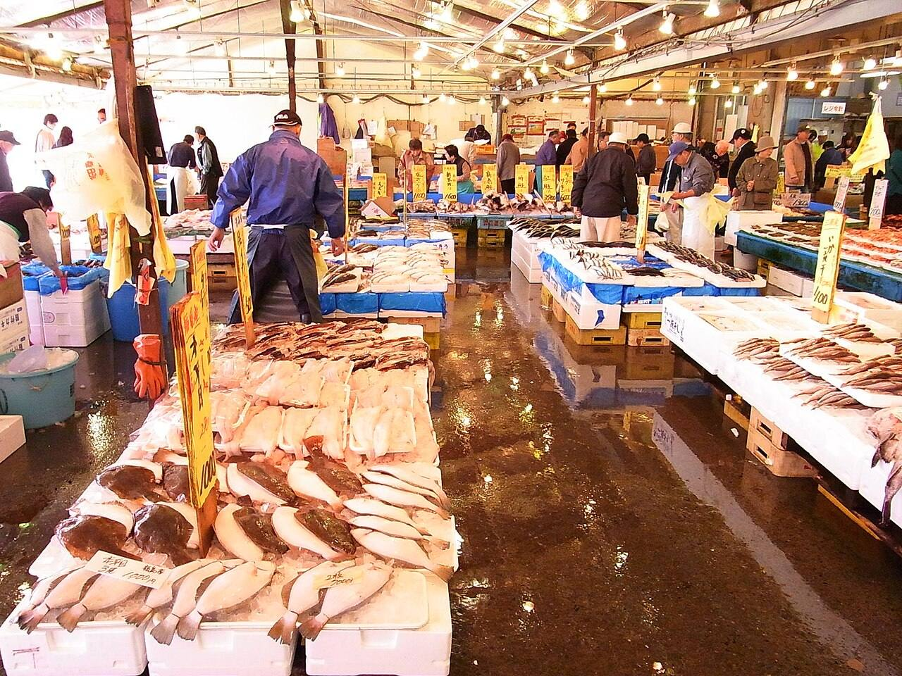
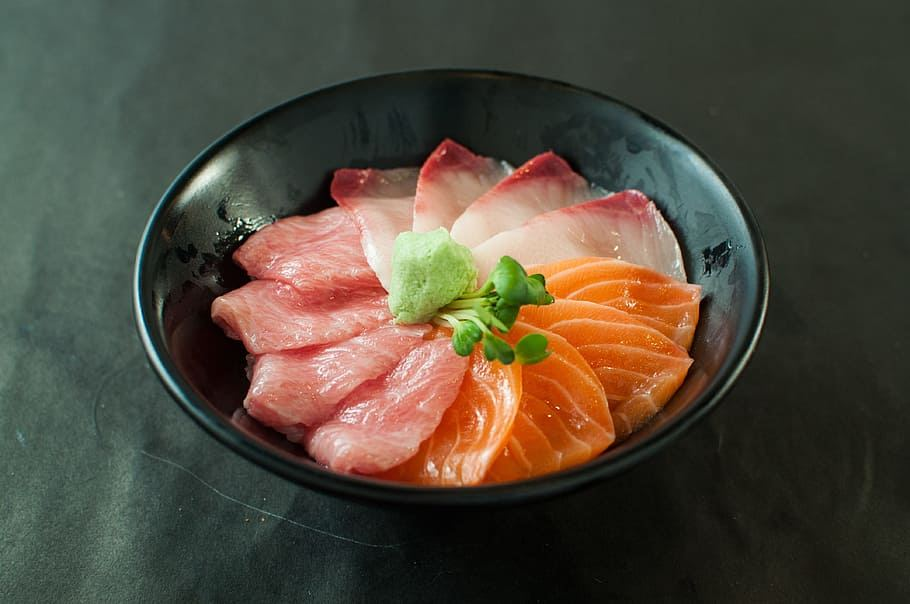

DAY 1
9/19
土

大洗海岸の日の出Photo: Σ64, CC BY 3.0
海から始める
大洗・那珂湊連休の初日は早起きで得をする日にします。5連休の一日目にいきなり遠出せず、 日の出を見て、市場で腹を満たして、昼には帰って昼寝。これで残り4日の体力が残ります。
- 04:45
- 水戸を出発。大洗まで30分ほど。コンビニで温かい飲み物を。
- 05:22
- 大洗海岸で日の出9/19の日の出は5時22分ごろ。海側なので水平線から昇ります。磯前神社下の「神磯の鳥居」前が定番の位置。
- 06:30
- 大洗磯前神社に参拝参拝無料。朝の境内は人が少なく静か。
- 09:00
- めんたいパーク大洗入館・工場見学ともに無料。試食あり。
- 10:30
- 那珂湊おさかな市場で昼食¥3,600 / 2人海鮮丼が1,500〜2,000円前後。11時台には行列ができるので早めに。駐車は4時間100円。
- 12:30
- 干物と鮮魚を買って大洗サンビーチを散歩¥1,500
- 15:00
- 帰宅。昼寝。
Day 1 subtotal
¥6,0002人分

